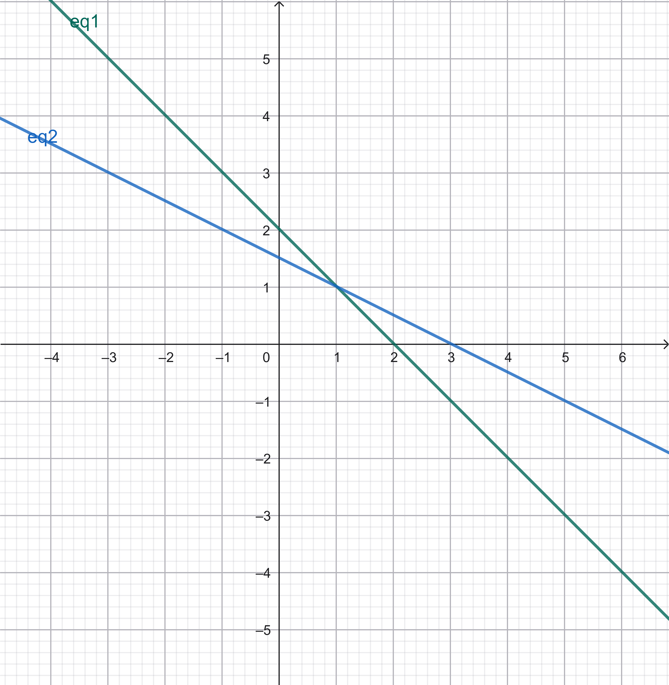

Alif Indra Aufakhi Akrom250411100179Teknik Informatikamateri |
Apa itu Sistem Persamaan Linear?Sistem persamaan linier adalah sekumpulan dua atau lebih persamaan matematika berbentuk linier (berderajat satu) yang memiliki variabel yang sama dan harus dipenuhi secara bersamaan. Persamaan linier sendiri adalah persamaan yang setiap variabelnya hanya berpangkat satu dan tidak saling dikalikan.
Bentuk Umum:
\[\begin{aligned} a_{11}x_1 + a_{12}x_2 + \cdots + a_{1n}x_n &= b_1 \\ a_{21}x_1 + a_{22}x_2 + \cdots + a_{2n}x_n &= b_2 \\ \vdots \\ a_{m1}x_1 + a_{m2}x_2 + \cdots + a_{mn}x_n &= b_m \end{aligned} \] Matriks RepresentasiSistem ini dapat direpresentasikan sebagai \(A \cdot X = B\), di mana:
Jenis-Jenis SolusiSolusi Tunggal: Hanya ada satu set nilai variabel.
Tidak Ada Solusi: Sistem inkonsisten (garis sejajar).
Solusi Tak Terhingga: Sistem dependen (garis berhimpit).
Contoh Grafis (2D)Garis Berpotongan: Solusi tunggal.
Garis Sejajar: Tidak ada solusi.
Garis Berimpit: Solusi tak terhingga.
Metode PenyelesaianMetode Penyelesaian Sistem Persamaan Linear:
Eksplorasi Mendalam Sistem Persamaan LinearSistem Persamaan Linear (SPL) bukan sekadar kumpulan angka, melainkan representasi dari titik temu berbagai kondisi atau batasan dalam matematika. Menyelesaikan SPL berarti mencari "titik keseimbangan" di mana semua persamaan terpenuhi secara simultan. 1.1 Analisis Konsistensi dan Jenis SolusiBerdasarkan keberadaan solusinya, SPL diklasifikasikan menjadi dua kategori utama:
1. Sistem Konsisten
Sistem yang memiliki setidaknya satu solusi. Dibagi menjadi:
2. Sistem Inkonsisten
Sistem yang tidak memiliki solusi sama sekali. Secara geometris, ini direpresentasikan oleh garis-garis yang sejajar namun tidak berhimpit, sehingga tidak pernah ada titik temu. 1.2 Representasi Matriks Teraugmentasi (Augmented Matrix)Untuk efisiensi komputasi, SPL sering ditulis dalam bentuk matriks teraugmentasi. Misalkan kita memiliki sistem:
\[
\begin{aligned}
a_{11}x + a_{12}y &= b_1 \\
a_{21}x + a_{22}y &= b_2
\end{aligned}
\]
Maka bentuk matriks teraugmentasinya adalah gabungan dari matriks koefisien \(A\) dan vektor konstanta \(B\):
\[ [A | B] = \left[ \begin{array}{cc|c} a_{11} & a_{12} & b_1 \\ a_{21} & a_{22} & b_2 \end{array} \right] \]
1.3 Simulasi Penyelesaian Manual: Metode CampuranSelesaikan SPL berikut:
(1) \( 3x + 2y = 18 \)
(2) \( x - y = 1 \) Langkah 1: Manipulasi PersamaanKita gunakan metode eliminasi. Kalikan persamaan (2) dengan angka 2 agar koefisien \(y\) bisa dihilangkan:
\( (2) \times 2 \rightarrow 2x - 2y = 2 \)
Langkah 2: Proses EliminasiJumlahkan persamaan (1) dengan hasil manipulasi persamaan (2):
\( (3x + 2y) + (2x - 2y) = 18 + 2 \)
\( 5x = 20 \rightarrow \mathbf{x = 4} \) Langkah 3: Substitusi BalikMasukkan nilai \(x = 4\) ke persamaan (2) yang paling sederhana:
\( 4 - y = 1 \rightarrow y = 4 - 1 \rightarrow \mathbf{y = 3} \)
Jadi, solusi sistem adalah (4, 3). 1.4 Aplikasi SPL dalam dunia nyataBerdasarkan materi yang dipelajari, SPL bukan hanya soal angka, tapi digunakan dalam:
Operasi Baris Elementer (OBE)Operasi Baris Elementer adalah serangkaian langkah matematis yang digunakan untuk mentransformasi matriks tanpa mengubah solusi dari sistem persamaan linear tersebut. Metode ini merupakan inti dari algoritma Eliminasi Gauss. Tiga Aturan Utama OBE:
1. Pertukaran Baris
Menukarkan posisi dua baris (persamaan) dalam matriks. Simbol: \(R_i \leftrightarrow R_j\)
2. Perkalian Skalar
Mengalikan suatu baris dengan bilangan real apa pun yang bukan nol. Simbol: \(k \cdot R_i\)
3. Penjumlahan Baris
Menggantikan suatu baris dengan hasil penjumlahan baris itu sendiri dengan kelipatan baris lainnya. Simbol: \(R_i + k \cdot R_j\) 2.1 Tahapan Eliminasi Gauss & Gauss-JordanTujuan akhir dari OBE adalah mengubah matriks menjadi salah satu dari dua bentuk berikut:
Alur Kerja:
Matriks Koefisien \((A|B)\) \(\rightarrow\) OBE \(\rightarrow\) Matriks Eselon \(\rightarrow\) Substitusi Balik. 2.2 Studi Kasus: Sistem 3 VariabelBerdasarkan contoh pada materi, mari kita lihat transformasi sistem berikut:
\[
\begin{aligned}
x_1 - x_2 + x_3 &= 3 \\
2x_1 + x_2 + 8x_3 &= 18 \\
4x_1 + 2x_2 - 3x_3 &= -2
\end{aligned}
\]
Langkah Penyelesaian Manual:
Hasil Akhir: Berdasarkan perhitungan manual, didapatkan solusi tunggal: \(x_1 = 1, x_2 = 0, x_3 = 2\).
3.1 Hasil Visualisasi (Versi GeoGebra)Di bawah ini adalah representasi geometri dari perpotongan garis tersebut. Perhatikan titik pertemuannya yang konsisten dengan hasil Python:  Gambar 2.1: Perpotongan garis menunjukkan solusi unik pada titik (2, 3). |